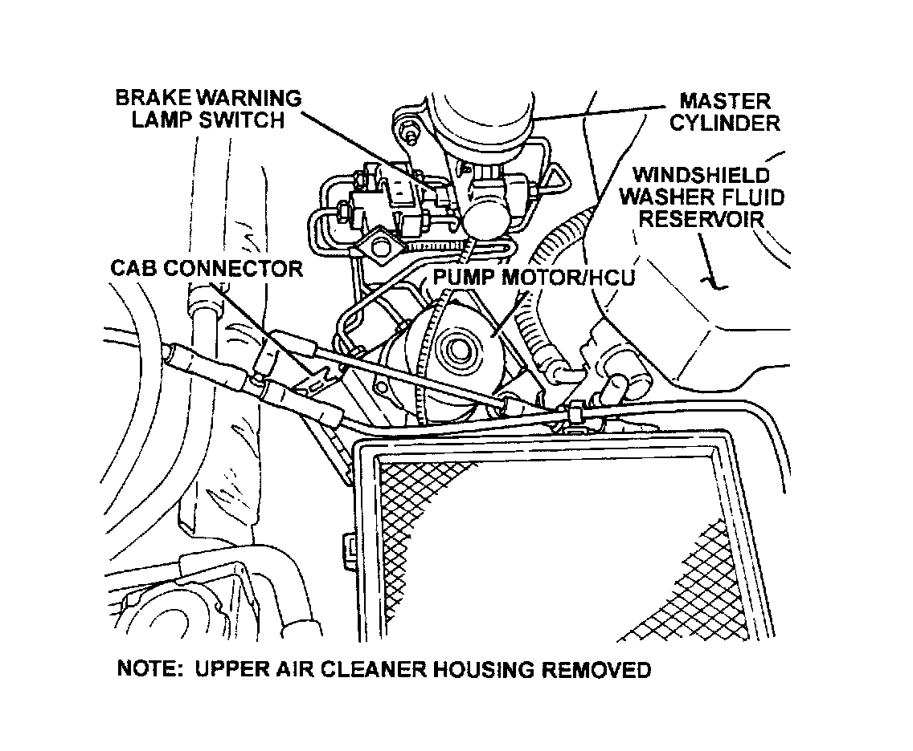

Antilock Brakes / Traction Control Systems: Application and ID
ZJ Body:

The Teves Mark 20 Antilock Brake System can be identified by the presence of the Hydraulic Control Unit (HCU) located with the Controller Antilock Brake (CAB) under the hood near the air cleaner housing.